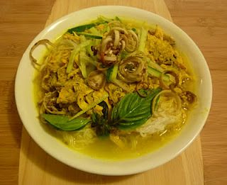
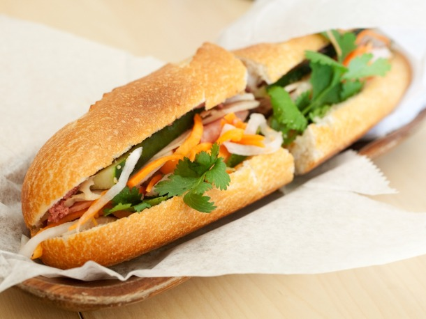
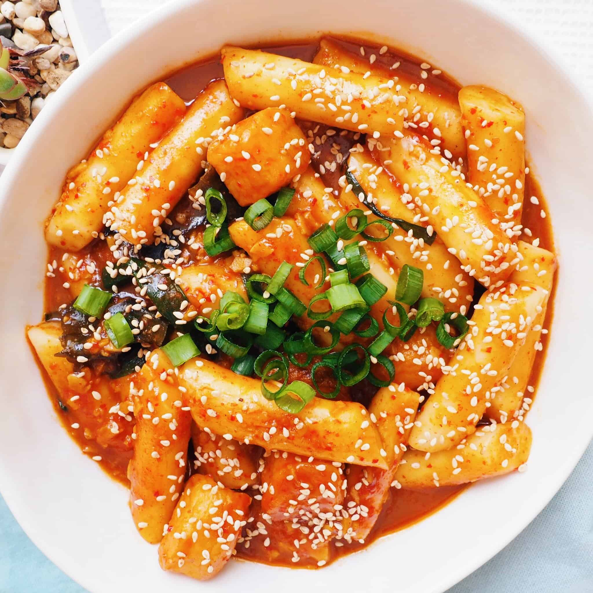
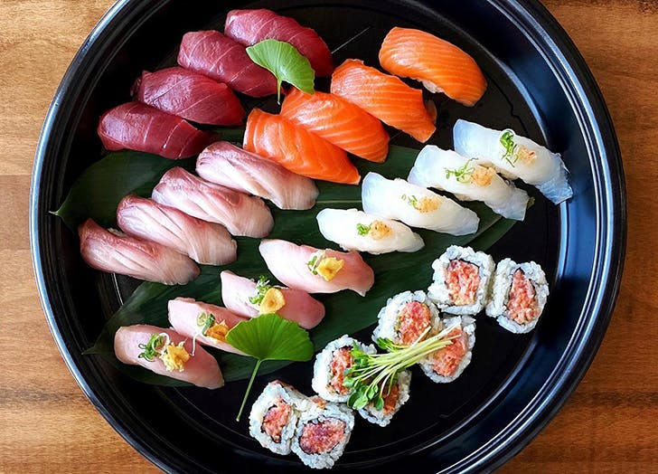
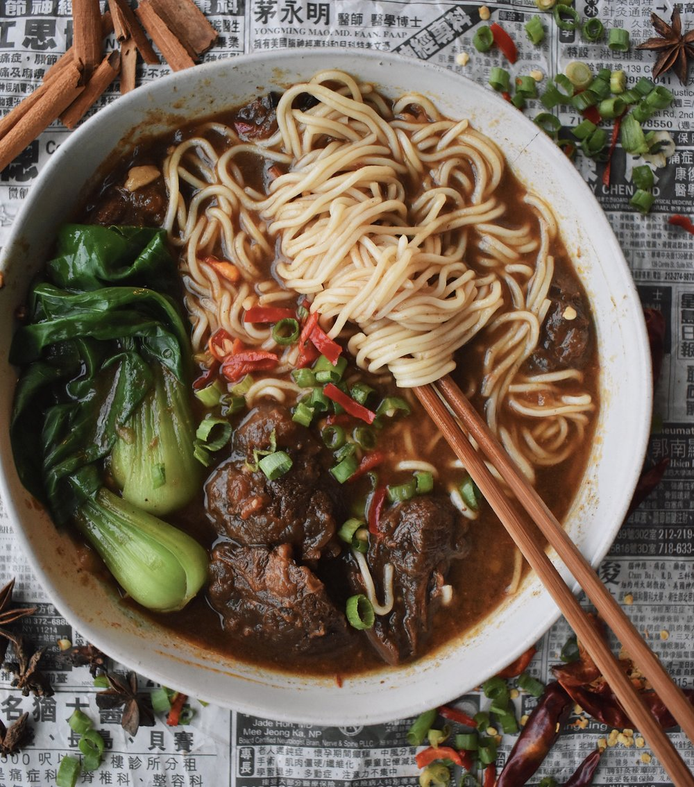
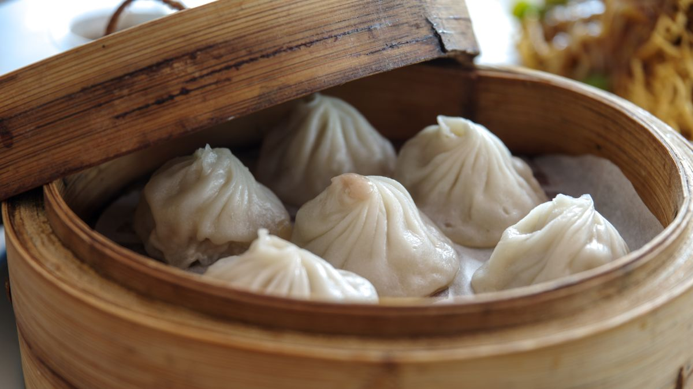
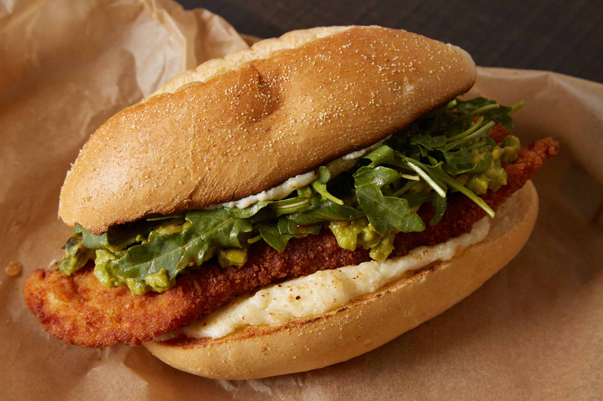

Different Cuisines I Like
- Cambodian Food
- Vietnamese Food
- Korean Food
- Japanese Food
- Taiwanese Food
- Chinese Food
- Italian Food
- Mexican Food
My Favorite Food From Each Culture's Cuisine
| Cambodian | Vietnamese | Korean | Japanese |
|---|---|---|---|
| Nom Pajok | Banh Mi | Tteokbokki | Sushi |
|  |  |  |  |
| Taiwanese | Chinese | Italian | Mexican |
|---|---|---|---|
| Beef Noodle Soup | Xiao Long Bao | Pasta | Torta |
|  |  |  |
 |